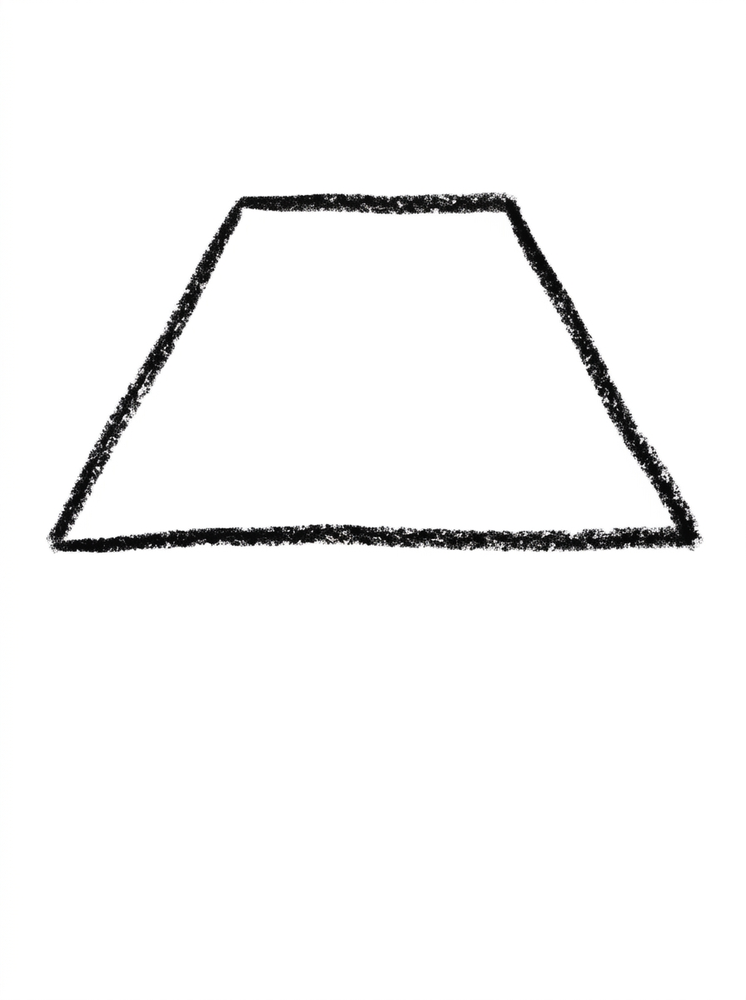
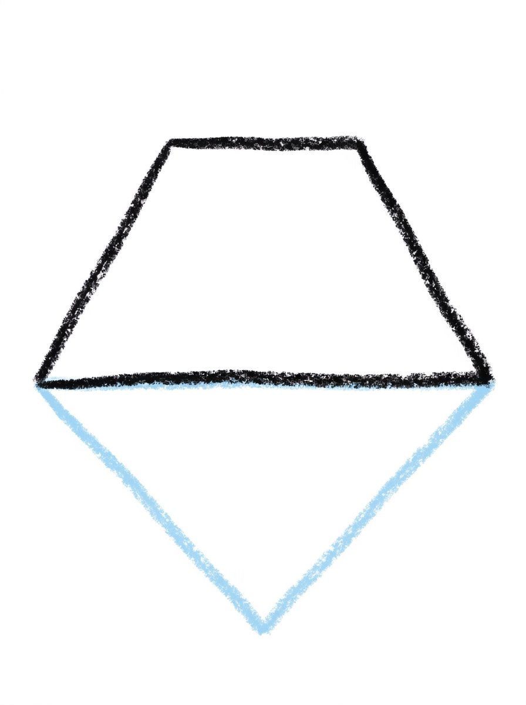
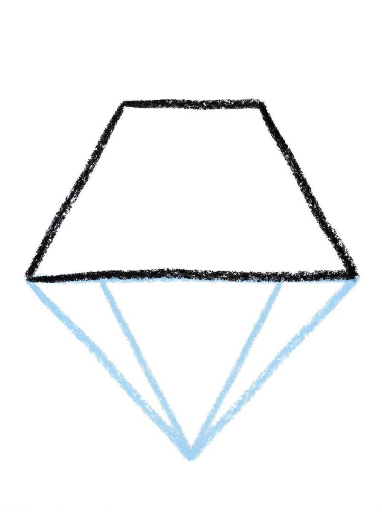
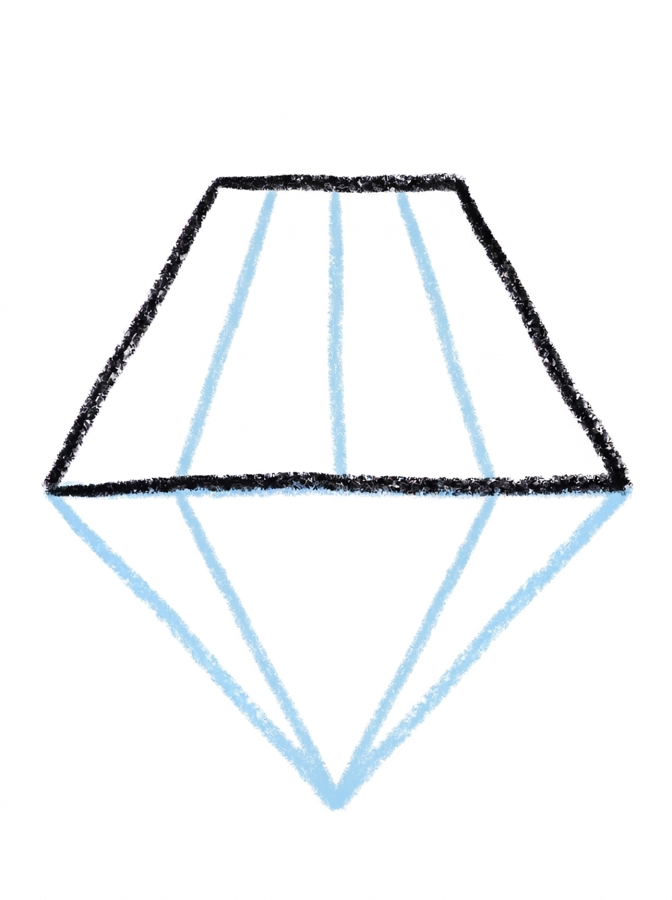
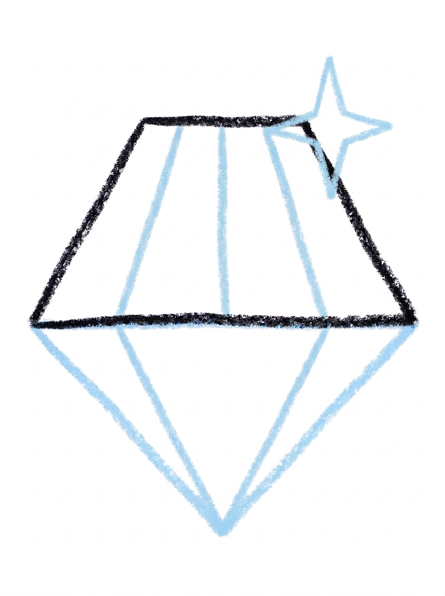
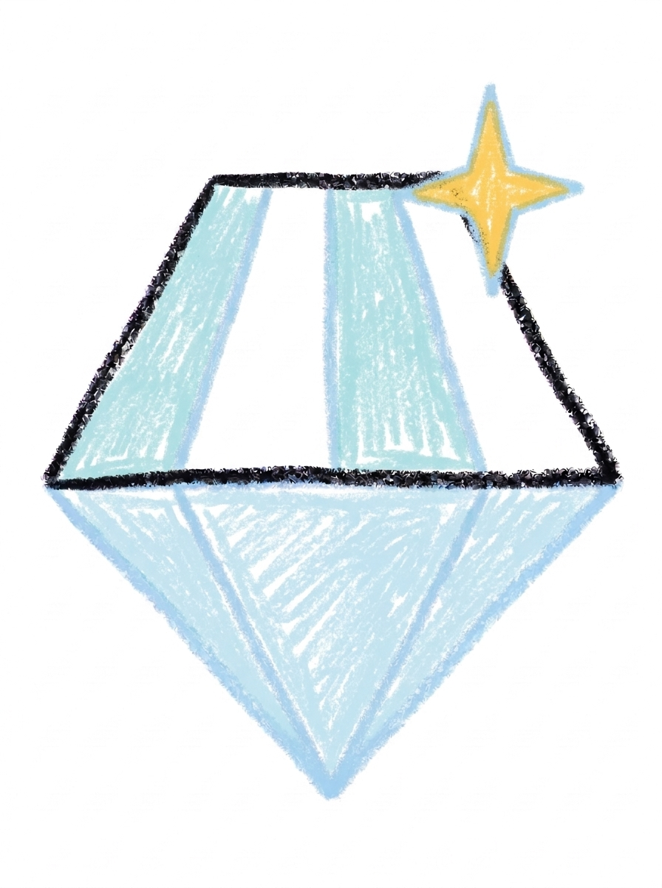

Diamond Drawing for Kids How to Draw A Diamond in 6 Easy Steps
Quick Answer
Draw a diamond in six easy steps: a wide trapezoid on top, a big pointed triangle underneath, facet lines inside both shapes, and a sparkly four-pointed star. Color it pale ice blue with a warm yellow sparkle. Made for ages 3 and up — no signup needed, just print and draw.
At a Glance
- Subject: How to draw a diamond
- Ages: 3+
- Steps: 6 steps
- Time: ~10 min
- Difficulty: Easy
- Supplies: Paper, crayons
A diamond looks fancy, but this one is secretly just two shapes stacked — a flat band on top and a pointed triangle underneath — dressed up with a few straight lines and one sparkle. If your child can draw a triangle and a straight line, they can draw this gem.
✏️ Draw Your Diamond in 6 Easy Steps
One step per box — this step by step diamond drawing shows each new part in a different color so kids can see exactly what changed.
Step 1: The Top

Draw a wide trapezoid — a shape with a short top edge and a longer bottom edge. That's the flat top of the diamond.
Step 2: The Point

Add a big triangle pointing down under the trapezoid, matching its bottom edge corner to corner. That's the diamond's point.
Step 3: The Facet Lines

Draw two diagonal lines inside the triangle, one from each top corner down to the point. These lines make the flat faces of the diamond, called facets.
Step 4: The Top Facets

Draw three short vertical lines inside the trapezoid, dividing it into four sections — more facets to catch the light.
Step 5: The Sparkle

Draw a small four-pointed star at the top-right corner of the diamond. That star is the sparkle!
Step 6: Color It In

Color your diamond! Pale ice blue, with some facet sections left white, and the sparkle warm yellow. Great drawing!
📊 Diamond Drawing by Age
Every age can join in — just adjust the job.
| Age | What they can do | Tip |
|---|---|---|
| 3-4 | Draw the big triangle point and color the finished diamond pale ice blue. | If the trapezoid feels tricky, a grown-up can draw the flat top band and your child still owns the point and the sparkle. |
| 4-5 | Add the trapezoid top and the two diagonal facet lines inside the triangle. | Say 'corner to corner' out loud in step 2 — matching those corners exactly is the whole trick of this drawing. |
| 6+ | Finish all six steps, including the three vertical lines that split the top into four sections and the four-pointed sparkle star. | Let older kids add a second smaller sparkle or extra facet lines inside the triangle for a fancier cut. |
🖨️ Download Your Free Diamond Drawing Printable
The printable lays out all 6 steps one per box, big enough for little hands — kids draw right alongside each step.
⬇️ Open Free Printable 🖨️ Print🎁 Free printable for ages 3+
💎 Diamond Treasure Page
Give your diamond somewhere fancy to live: draw a treasure chest, a jewelry box, or a crown underneath it and set the diamond right on top. Then decide together whose treasure it is — a pirate's best find, a queen's crown jewel, or the gem your child would buy first if they were rich for a day. Write one sentence about the treasure under the drawing (or dictate it for a grown-up to write).
What You'll Need to Draw A Diamond
All you need is a pencil, an eraser, and crayons or markers. For the colors in the tutorial, have pale ice blue ready for the diamond, white for some of the facet sections, and warm yellow for the sparkle. Regular printer paper or a sketchbook both work, and a ruler is optional — hand-drawn lines look just as gemmy.
What They're Learning
This tutorial practices trapezoids and triangles, matching corners exactly, and drawing straight lines between two chosen points. Kids also divide a shape into four sections (early fraction thinking in disguise), tell diagonal lines from vertical ones, count sections as they go, and finish with a four-pointed star — a shape that takes real hand control to keep even.
Make It Yours
Try a pink diamond or a deep blue one, a ring by drawing the diamond on top of a simple band, a necklace made of a row of diamonds in different sizes, or a second sparkle star in the opposite corner. Older kids can add extra facet lines inside the triangle for a fancier, more detailed cut.
🛒 Our Favorite Drawing Supplies
These are the supplies we reach for in our own home — washable (because kids), quality paper, and enough colors to avoid fights.
As an Amazon Associate, MomYouNeedThis earns from qualifying purchases — at no extra cost to you.
💡 Diamond Drawing Tips for Parents
Step 2 is the make-or-break step: the triangle's top corners must land exactly on the trapezoid's bottom corners. If the triangle starts too wide or too narrow, the diamond looks lopsided. Have your child put a light dot at each bottom corner of the band first, then draw the triangle's two sides from those dots down to a single point below.
In step 4, three lines divide the top band into four sections, and spacing them evenly is the real challenge. Suggest marking three light dots along the band first, spaced like fence posts, then drawing each line down from a dot. If the four-pointed sparkle puzzles them, demonstrate it slowly — it's really two pointed ovals crossing each other.
💎 Diamonds in the Real World
Real diamonds are born deep underground, where carbon — the same stuff as pencil lead — is squeezed and heated for an incredibly long time until it becomes the hardest natural material on Earth. Miners dig them up rough and dull-looking; a diamond only sparkles after an expert cuts its flat faces, called facets, so light can bounce around inside it.
Not every diamond becomes jewelry. Because diamonds are so hard, they are also used on the tips of drills and cutting tools. The glittering gem and the workshop tool are the same stone — a fact kids enjoy more than seems reasonable. Ask your child whether their diamond is headed for a crown or a treasure chest.
✋ Warm-Up: Dot-to-Dot Sparkles
A cut diamond is really a connect-the-dots puzzle, so warm up that way. Scatter dots on scrap paper and join them with straight lines — triangles, zigzags, a crown shape. Then practice the four-point sparkle: two lines crossing like a plus sign, pinched in the middle. Sparkles are the fastest satisfying drawing a kid can make.
If a line misses its dot, nobody can tell once the facets fill in. This is the most forgiving geometry on the site — crooked facets just look like a different cut of gem, and jewelers cut new styles all the time.
📖 Give Your Diamond a Story
Every diamond in a story is being guarded, given, or stolen. Whose diamond is this — a queen's, a pirate's, a dragon's? Have your child dictate two sentences about how it got where it is, and write them beneath the drawing. Jewels without stories are just rocks; yours is not just a rock.
The star tutorial is its sky cousin: same sparkle, different address. Drawing both gives your child the two ends of a treasure hunt — the one you dig up and the one you wish on. Pair the gem with its sky twin in how to draw a star, or dress it up with how to draw a bow.
❓ Diamond Drawing FAQs
What is the easiest way to draw a diamond?
Start with the flat band on top — a wide trapezoid — then hang one big pointed triangle underneath it, matching corner to corner. Straight facet lines inside both shapes do the rest, and one little star adds the sparkle.
What age is this diamond drawing for?
It's made for ages 3 and up. The shapes are simple — a trapezoid, a triangle, and straight lines — and younger kids can draw the point and color while older kids add the facet lines and sparkle themselves.
What supplies do we need?
A pencil, an eraser, paper, and crayons or markers. For colors you'll want pale ice blue, white, and warm yellow for the sparkle.
Is the printable really free?
Yes — every printable on MomYouNeedThis is 100% free, including this diamond drawing tutorial. There is no signup, no email, and no catch — just download, print, and draw.
How do I print it?
Open the PDF and choose Print, then set the scale to 100% (sometimes called Actual Size) so the steps print at full size. The tutorial is designed for regular US Letter paper, and plain printer paper works perfectly.
What is a trapezoid?
A trapezoid is a four-sided shape with a short top edge, a longer bottom edge, and two slanted sides — like a rectangle that spreads out as it goes down. In this drawing it's the flat band across the top of the diamond.
Why does the diamond have lines inside it?
Those lines are facets — the flat faces cut into a real gem so it catches light and sparkles. Two diagonal lines section off the point, and three short vertical lines divide the top band into four sections.
Can my diamond be a different color?
Absolutely — gems come in every color. Try a pink diamond, a deep blue one, or a rainbow diamond with a different color in every facet section. The shapes stay the same; the color is where your child makes it theirs.
📚 Keep Exploring
- ✏️ All 74 Drawing Tutorials 74 free step-by-step drawing tutorials for kids.
- 🎀 Cute Coloring Free cute coloring pages for kids.
- ✏️ Drawing Practice Free printable drawing pre-writing worksheet for toddlers.